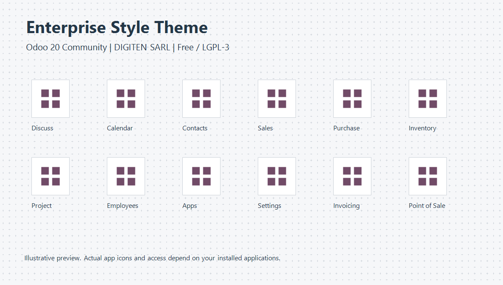

<section class="oe_container">
  <div class="oe_row oe_spaced">
    <h2 class="oe_slogan">Enterprise Style Theme</h2>
    <h3 class="oe_slogan">A free visual extension for Odoo 20 Community</h3>
    <p>Developed by DIGITEN SARL on the MuK Backend Theme foundation.</p>
    <ul>
      <li>Light grey launcher background with a subtle repeating cross pattern.</li>
      <li>Centered app grid with white icon cards and responsive layouts.</li>
      <li>Refined buttons, forms, dropdowns and list spacing.</li>
      <li>Uses existing application icons and respects user access rights.</li>
    </ul>
    <p></p><p>Illustrative preview; actual app icons are supplied by installed applications.</p><h3>Requirements</h3>
    <p>Requires MuK Backend Theme (muk_web_theme) and its compatible Odoo 20 dependencies. MuK components remain authored by MuK IT.</p>
    <h3>Scope and license</h3>
    <p>Free under LGPL-3. This independent Community theme is not an official Odoo Enterprise product. No Enterprise source code, licenses or applications are provided. Odoo is a trademark of its respective owner.</p>
    <h3>Installation</h3>
    <p>Copy the module into the addons path, satisfy MuK dependencies, restart Odoo, update the Apps list and install Enterprise Style Theme. Refresh the browser with Ctrl+F5.</p>
  </div>
</section>

